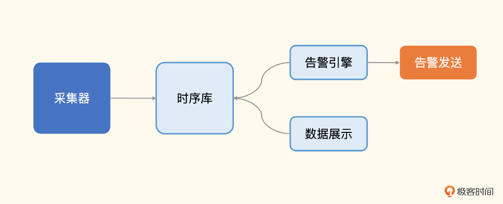

监控系统的典型架构

我们先来看监控系统的典型架构图，从左往右看，采集器是负责采集监控数据的，采集到数据之后传输给服务端，通常是直接写入时序库。然后就是对时序库的数据进行分析和可视化，分析部分最典型的就是告警规则判断（复杂一些的会引入统计算法和机器学习的能力做预判），即图上的告警引擎，告警引擎产生告警事件之后交给告警发送模块做不同媒介的通知。可视化比较简单，就是图上的数据展示，通过各种图表来合理地渲染各类监控数据，便于用户查看比较、日常巡检。
采集器
采集器负责采集监控数据，有两种典型的部署方式，一种是跟随监控对象部署，比如所有的机器上都部署一个采集器，采集机器的 CPU、内存、硬盘、IO、网络相关的指标；另一种是远程探针式，比如选取一个中心机器做探针，同时探测很多个机器的PING连通性，或者连到很多MySQL实例上去，执行命令采集数据。
业界有不少开源解决方案，大同小异，总体分为推拉两种模式，各有应用场景。
Telegraf
Telegraf 是InfluxData公司的产品，开源协议是MIT，非常开放，有很多外部贡献者，主要配合 InfluxDB 使用。当然，Telegraf 也可以把监控数据推给 Prometheus、Graphite、Datadog、OpenTSDB 等很多其他存储，但和 InfluxDB 的对接是最丝滑的。
InfluxDB 支持存储字符串，而 Telegraf 采集的很多数据都是字符串类型，但如果把这类数据推给 Prometheus 生态的时序库，比如 VictoriaMetrics、M3DB、Thanos等，它就会报错。因为这些时序库只能存储数值型时序数据。另外，Telegraf 采集的很多数据在成功和失败的时候会打上不同的标签，比如成功的时候会打上 result=success 标签，失败的时候打上 result=failed 标签。
在 InfluxDB 中这种情况是可以的，但是在 Prometheus 生态里，标签变化就表示不同的指标，这种情况我叫它 **标签非稳态结构**，使用 Prometheus 生态的时序库与 Telegraf 对接时需要 **把这类标签丢弃掉**。
Telegraf 是指标领域的All-In-One采集器，支持各种采集插件，只需要使用 Telegraf 这一个采集器，就能解决绝大部分采集需求。
Exporters
Exporter是专门用于Prometheus生态的组件，Prometheus 生态的采集器比较零散，每个采集目标都有对应的 Exporter 组件，比如 MySQL 有 mysqld_exporter，Redis 有 redis_exporter，交换机有 snmp_exporter，JVM 有 jmx_exporter。
这些 Exporter 的核心逻辑，就是去这些监控对象里采集数据，然后暴露为 Prometheus 协议的监控数据。比如 mysqld_exporter，就是连上 MySQL，执行一些类似于 show global status 、 show global variables 、 show slave status 这样的命令，拿到输出，再转换为 Prometheus 协议的数据；还有 redis_exporter，它是连上 Redis，执行一些类似于 info 的命令，拿到输出，转换为 Prometheus 协议的数据。
随着 Prometheus 的影响越来越大，很多中间件都内置支持了 Prometheus，直接通过自身的 /metrics 接口暴露监控数据，不用再单独伴生 Exporter，简化了架构。比如 Kubernetes 中的各类组件：kube-apiserver、kube-proxy、kube-scheduler 等等，比如 etcd，还有新版本的ZooKeeper、 RabbitMQ、HAProxy，都可以直接暴露 Prometheus 协议的监控数据，无需 Exporter。
不管是 Exporter 还是直接内置支持 Prometheus 协议的各类组件，都提供 HTTP 接口（通常是 /metrics ）来暴露监控数据，让监控系统来拉，这叫做 PULL 模型。而像 Telegraf 那种则是 PUSH 模型，采集了数据之后调用服务端的接口来推送数据。关于PULL 模型和PUSH 模型我们后面第5讲的时候还会再详细地讲一下，这里你先有个印象就可以了。
Telegraf以及后面即将讲到的 Grafana-Agent，也可以直接抓取 Prometheus 协议的监控数据，然后统一推给时序库，这种架构比较清晰，总之跟数据采集相关的都由采集器来负责。
Grafana-Agent
Grafana-Agent 是 Grafana 公司推出的一款 All-In-One 采集器，不但可以采集指标数据，也可以采集日志数据和链路数据。开源协议是Apache 2.0，比较开放。
Grafana-Agent 作为后来者，是如何快速集成各类采集能力的呢？Grafana-Agent 写了个框架，方便导入各类 Exporter，把各个 Exporter 当做 Lib 使用，常见的 Node-Exporter、Kafka-Exporter、Elasticsearch-Exporter、Mysqld-Exporter 等，都已经完成了集成。这样我们就不用到处去找各类 Exporter，只使用Grafana-Agent这一个二进制就可以搞定众多采集能力了。
Grafana-Agent 这种集成 Exporter 的方式，完全兼容 Exporter 的指标体系，比如 Node-Exporter。如果我们的场景不方便使用PULL的方式来抓取数据，就可以换成Grafana-Agent，采用PUSH的方式推送监控数据，完全兼容Node-Exporter的指标。当然，Exporter种类繁多，Grafana-Agent不可能全部集成，对于默认没有集成进去的Exporter，Grafana-Agent也支持用PULL的方式去抓取其他Exporter的数据，然后再通过Remote Write的方式，将采集到的数据转发给服务端。
对于日志采集，Grafana-Agent集成了Loki生态的日志采集器Promtail。对于链路数据，Grafana-Agent集成了OpenTelemetry Collector。相当于把可观测性三大支柱的采集能力都建全了。一个Agent搞定所有采集能力有个显而易见的好处，就是便于附加一些通用标签，比如某个机器的所有可观测性数据，都统一打上机器名的标签，后面就可以使用这种统一的标签做关联查询，这个关联能力是这类All-In-One采集器带来的最大好处。
Categraf
Categraf 是快猫团队开源的一款监控采集器，开源协议是MIT，非常开放。
你可能会想，已经有这么多采集器了，为何还要再造一个轮子呢？Categraf的定位类似Grafana-Agent，支持metrics、logs、traces的采集，未来也会支持事件的采集，对于同类监控目标的多个实例的场景，又希望做出Telegraf的体验。同时对于所有的采集插件，不但会提供采集能力，也会提供监控大盘、告警规则，让社区开箱即用。
Categraf偏重Prometheus生态，标签是稳态结构，只采集数值型时序数据，通过Remote Write方式推送数据给后端存储，所有支持Remote Write协议的时序库都可以对接，比如Prometheus、VictoriaMetrics、M3DB、Thanos 等等。
对于习惯使用Prometheus的用户，Categraf也支持直接读取prometheus.yml中的scrape配置，对接各类服务发现机制，实现上就是把 Prometheus agent mode 的代码引入进来了。
除了上面介绍的采集器，业内还有很多其他方案，比如 Datadog-Agent、Metricsbeat 等，这里就不一一介绍了。实际上在公司内部落地的时候，倒也不是非黑即白，一定要选择某一个。很多时候，一个采集器可能搞不定所有业务需求，使用一款主力采集器，辅以多款其他采集器是大多数公司的选择。
机器层面的监控，我推荐 Telegraf 和 Categraf，内置了监控脚本、进程/端口监控，CPU、内存之类的也都很完备；探针类的监控自由度就很高了，不同的中间件、数据库监控，习惯用哪个采集器就可以用哪个。
采集器采集到数据之后，要推给服务端。通常有两种做法，一个是直接推给时序库，一个是先推给Kafka，再经由Kafka写到时序库。当然，一些复杂的情况，可能会在Kafka和时序库之间加一个流式计算引擎，比如Flink，做一些预聚合计算。但绝大部分公司都用不到，所以这里我们先不管复杂流式计算的问题，重点来看一下时序库。
时序库
监控系统的架构中，最核心的就是时序库，用于存储时序数据。老一些的监控系统直接复用关系型数据库，比如Zabbix直接使用MySQL存储时序数据，MySQL擅长处理事务场景，没有针对时序场景做优化，容量上有明显的瓶颈。Open-Falcon是用RRDtool攒了一个分布式存储组件Falcon-Graph，但是RRDTool本身的设计就有问题，散文件很多，对硬盘的IO要求太高，性能较差。Falcon-Graph是分布式的，可以通过堆机器来解决大规模的问题，但显然不是最优解。
后来，各种专门解决时序存储问题的数据库横空出世，比较有代表性的有：OpenTSDB、InfluxDB、TDEngine、M3DB、VictoriaMetrics、TimescaleDB等。
如果规模比较小，1000台机器以下，通常一个单机版本的Prometheus就够用了。如果规模再大一些，建议你考虑VictoriaMetrics，毕竟架构简单，简单的东西可能不完备，但是出了问题容易排查，更加可控。
下面我们逐一介绍一下。
OpenTSDB
OpenTSDB出现得较早，2010年左右就有了，OpenTSDB的指标模型有别于老一代监控系统死板的模型设计，它非常灵活，给业界带来了非常好的引导。
OpenTSDB是基于HBase封装的，后来持续发展，也有了基于Cassandra封装的版本。
由于底层存储是基于HBase的，一般小公司都玩不转，在国内的受众相对较少，当下再选型时序数据库时，就已经很少有人会选择OpenTSDB了。
InfluxDB
InfluxDB来自InfluxData，是一个创业公司做的项目，2019年D轮融资6000万美金，所以开发人员不担心养家糊口的问题，做的产品还是非常不错的。
InfluxDB针对时序存储场景专门设计了存储引擎、数据结构、存取接口，国内使用范围比较广泛，而且InfluxDB可以和Grafana、Telegraf等良好整合，生态是非常完备的。不过InfluxDB开源版本是单机的，没有开源集群版本。毕竟是商业公司，需要赚钱实现良性发展，这个点是需要我们斟酌的。
TDEngine
TDEngine姑且可以看做是国产版InfluxDB，GitHub的Star数上万，针对物联网设备的场景做了优化，性能很好，也可以和Grafana、Telegraf整合，对于偏设备监控的场景，TDEngine是个不错的选择。
TDEngine的集群版是开源的，相比InfluxDB，TDEngine这点很有吸引力。TDEngine不止是做时序数据存储，还内置支持了流式计算，可以让用户少部署一些组件。
你可能比较关注TDEngine是否可以和Prometheus生态良好打通。通过TDEngine的官网可以得知，TDEngine是支持Prometheus的remote_read和remote_write接口的。不过不支持Prometheus的Query类接口，这点需要注意。
注：Thanos、M3DB、VictoriaMetrics都直接兼容Prometheus的Query类接口，上层程序可以把这些时序库当做Prometheus来使用。
M3DB
M3DB是来自Uber的时序数据库，M3声称在Uber抗住了66亿监控指标，这个量非常庞大。而且M3DB是全开源的，包括集群版，不过架构原理比较复杂，CPU和内存占用较高，在国内没有大规模推广起来。M3DB的架构代码中包含很多分布式系统设计的知识，是个可以拿来学习的好项目。
VictoriaMetrics
VictoriaMetrics，简称VM，架构非常简单清晰，采用merge read方式，避免了数据迁移问题，搞一批云上虚拟机，挂上云硬盘，部署VM集群，使用单副本，是非常轻量可靠的集群方式。
VM实现了Prometheus的Query类接口，即 /api/v1/query、 /api/v1/query_range、 /api/v1/label/<label-key>/values 相关的接口，是Prometheus一个非常好的Backend，甚至可以说是Prometheus的一个替代品。其实VM的初衷就是想要替换掉Prometheus的。
TimescaleDB
TimescaleDB是 timescale.inc 开发的一款时序数据库，作为一个PostgreSQL的扩展提供服务。
它是基于PostgreSQL设计而成的，而PostgreSQL生态四十年的积累，就是巨人的肩膀，很多底层的工作PostgreSQL其实已经完成了。就拿保障数据安全来说吧，因为程序可能随时会崩溃，服务器可能会遇到电源问题或硬件故障，磁盘可能损坏或者夯住，这些极端场景都需要完善的解决方案来处理。PostgreSQL社区已经有了现成的高可用特性，包括完善的流复制和只读副本、数据库快照功能、增量备份和任意时间点恢复、wal支持、快速导入导出工具等。而其他时序库，这些问题都要从头解决。
但是传统数据库是基于btree做索引的，数据量到百亿或者千亿行，btree会大到内存都存不下，产生频繁的磁盘交换，数据库性能会显著下降。另外，时序数据的写入量特别大，PostgreSQL面对大量的插入，性能也不理想。TimescaleDB 就要解决这些问题。目前Zabbix社区在尝试对接到TimescaleDB，不过国内应用案例还比较少。
上面我们罗列了业界常用的几个时序库，你可以根据需求自行选择。数据一旦进入时序库，后面就可以对接告警引擎和可视化了，这两部分分别解决了什么问题，架构原理如何？我们一起看一下。
告警引擎
告警引擎的核心职责就是处理告警规则，生成告警事件。通常来讲，用户会配置数百甚至数千条告警规则，一些超大型的公司可能要配置数万条告警规则。每个规则里含有数据过滤条件、阈值、执行频率等，有一些配置丰富的监控系统，还支持配置规则生效时段、持续时长、留观时长等。
告警引擎通常有两种架构，一种是数据触发式，一种是周期轮询式。
数据触发式，是指服务端接收到监控数据之后，除了存储到时序库，还会转发一份数据给告警引擎，告警引擎每收到一条监控数据，就要判断是否关联了告警规则，做告警判断。因为监控数据量比较大，告警规则的量也可能比较大，所以告警引擎是会做分片部署的，即部署多个实例。这样的架构，即时性很好，但是想要做指标关联计算就很麻烦，因为不同的指标哈希后可能会落到不同的告警引擎实例。
注：分片的常见做法是根据指标标识做哈希。
周期轮询式，架构简单，通常是一个规则一个协程，按照用户配置的执行频率，周期性查询判断即可，因为是主动查询的，做指标关联计算就会很容易。像Prometheus、Nightingale、Grafana等，都是这样的架构。
生成事件之后，通常是交给一个单独的模块来做告警发送，这个模块负责事件聚合、收敛，根据不同的条件发送给不同的接收者和不同的通知媒介。告警事件的处理，是一个非常通用的需求，而且非常零碎、复杂，每个监控系统都去实现一套，通常不会做得很完备。于是就有了专门处理这类需求的产品，最典型的比如 PagerDuty，可以接收各类事件源的事件，用户就只需要在 PagerDuty 做 OnCall 响应即可，非常方便。
数据展示
监控数据的可视化也是一个非常通用且重要的需求，业界做得最成功的当数Grafana。Grafana采用插件式架构，可以支持不同类型的数据源，图表非常丰富，基本可以看做是开源领域的事实标准。很多公司的商业化产品中，甚至直接内嵌了Grafana，可见它是多么流行。当然，Grafana新版本已经修改了开源协议，使用 AGPLv3，这就意味着如果某公司的产品基于Grafana做了二次开发，就必须公开代码，有些厂商想要Fork Grafana，然后进行闭源商业分发，就行不通了。
监控数据可视化，通常有两类需求，一个是即时查询，一个是监控大盘（Dashboard）。即时查询是临时起意，比如线上有个问题，需要追查监控数据，还原现场排查问题，这就需要有个方便我们查看的指标浏览功能，快速找到想要的指标。监控大盘通常用于日常巡检和问题排查，由资深工程师创建，放置了一些特别值得重点关注的指标，一定程度上可以引发我们思考，具有很强的知识沉淀效果。如果想要了解某个组件的原理，这个组件的监控大盘通常可以带给你一些启发。